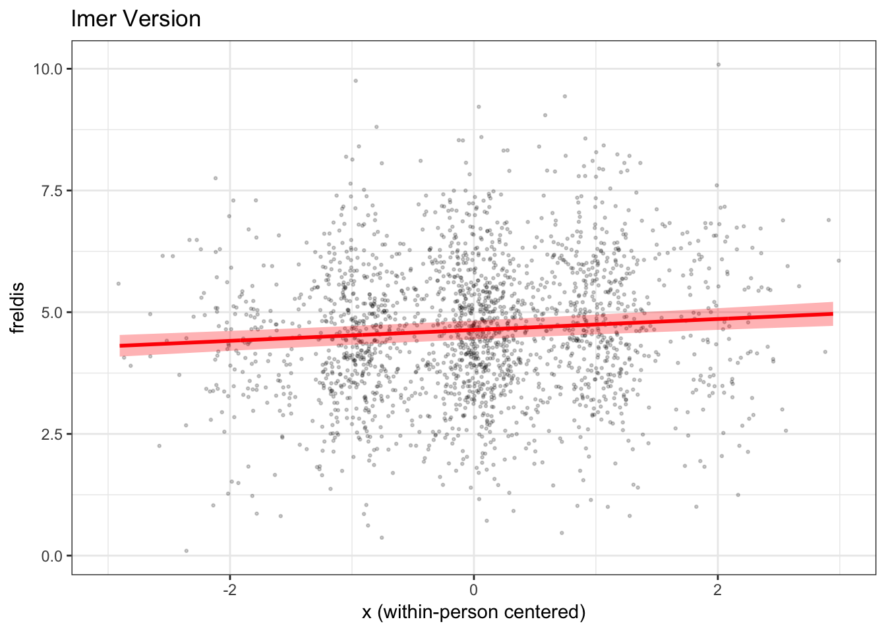
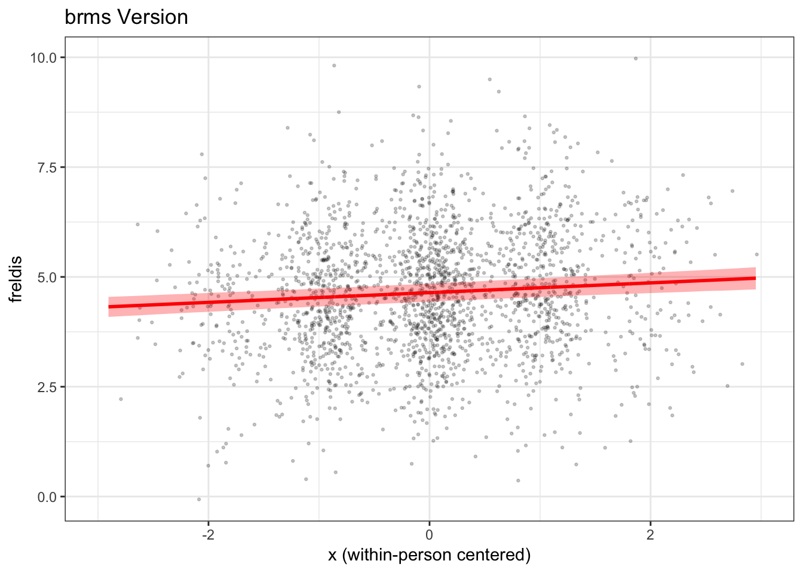
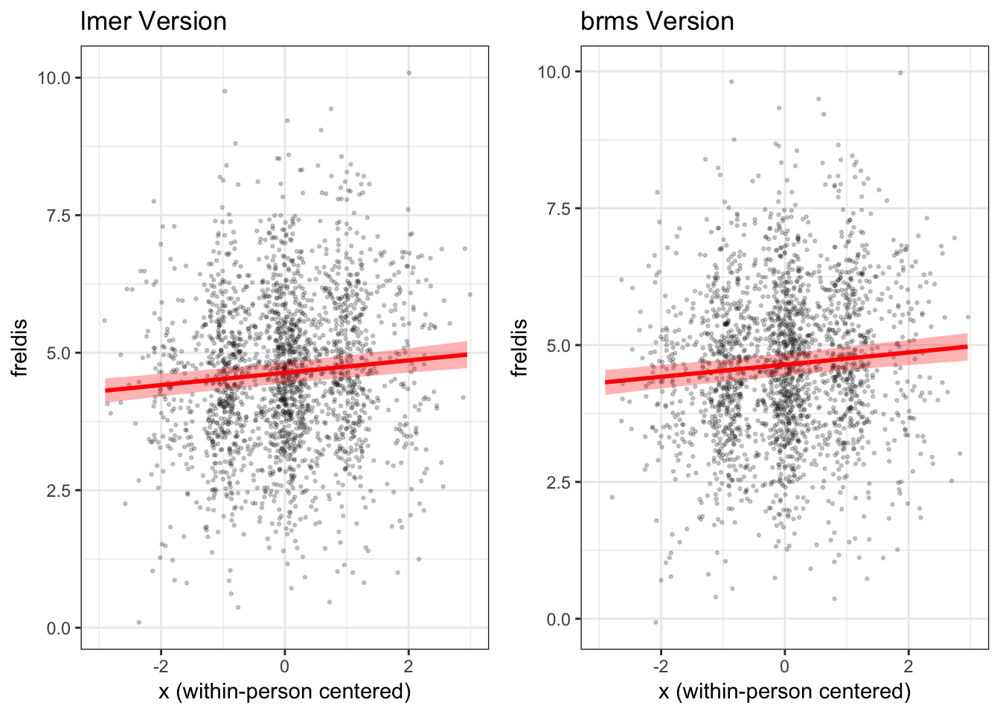
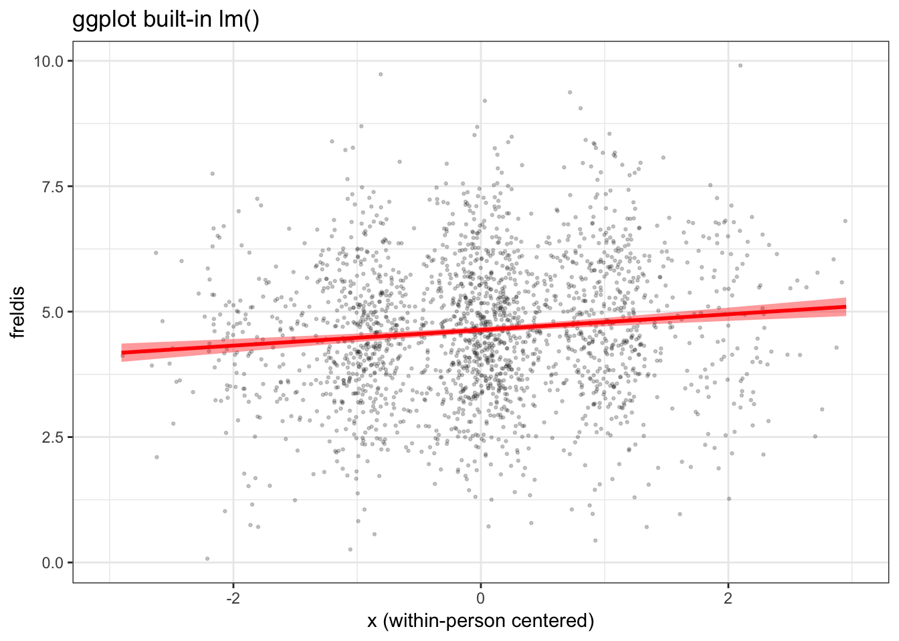
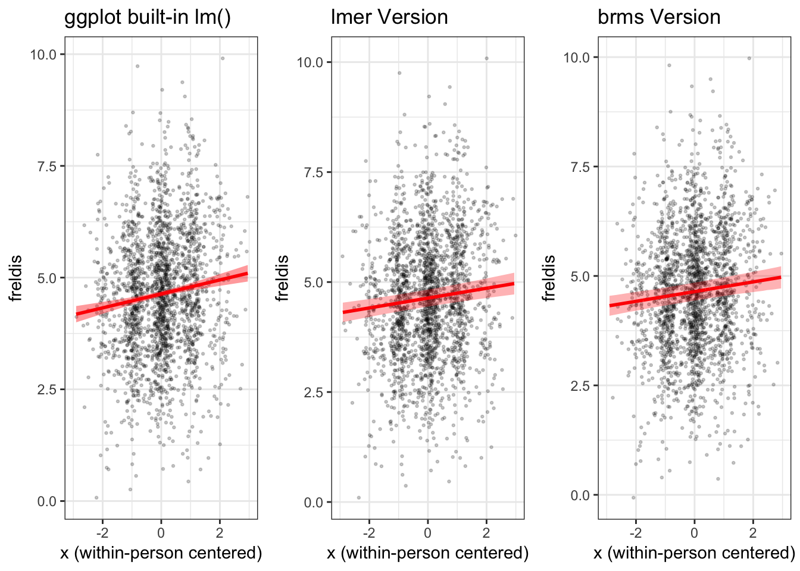

This guide demonstrates how to plot a fixed (average) effect from a multilevel model in R.
library(lme4)
library(lmerTest)
library(ggplot2)
library(bmlm)
library(brms)
library(gridExtra)For this demo, we will use the BLch9 dataset available through the bmlm package for R. The BLch9 dataset comes from the example used in Chapter 9 of Intensive Longitudinal Methods by Niall Bolger & J-P Laurenceau. (The book is great, by the way, and I highly recommend it.)
For details on this dataset, run ?BLch9.
d <- BLch9lme4First, we will fit a multilevel model in which x and m predict our outcome variable, freldis. We will include x and m as fixed effects and allow for each of these effects to vary between persons through the inclusion of random effect terms.
Note that x and m have already been person-centered.
fit <- lmer(freldis ~ x + m + (x + m | id), data = d)summary(fit)## Linear mixed model fit by REML. t-tests use Satterthwaite's method [
## lmerModLmerTest]
## Formula: freldis ~ x + m + (x + m | id)
## Data: d
##
## REML criterion at convergence: 6137.8
##
## Scaled residuals:
## Min 1Q Median 3Q Max
## -3.3808 -0.6184 -0.0114 0.6423 3.3384
##
## Random effects:
## Groups Name Variance Std.Dev. Corr
## id (Intercept) 0.930623 0.96469
## x 0.008267 0.09093 0.28
## m 0.047250 0.21737 0.63 0.92
## Residual 0.900115 0.94874
## Number of obs: 2100, groups: id, 100
##
## Fixed effects:
## Estimate Std. Error df t value Pr(>|t|)
## (Intercept) 4.63538 0.09867 99.02302 46.981 < 2e-16 ***
## x 0.11202 0.02319 201.77869 4.831 2.68e-06 ***
## m 0.15359 0.02889 102.79964 5.317 6.19e-07 ***
## ---
## Signif. codes: 0 '***' 0.001 '**' 0.01 '*' 0.05 '.' 0.1 ' ' 1
##
## Correlation of Fixed Effects:
## (Intr) x
## x 0.109
## m 0.466 0.186
## convergence code: 0
## singular fitWe can see from the model output that there is a significant effect of x on freldis for the typical person, adjusting for m. Now, we will plot this effect.
To generate a plot of this effect, we want to use the model predicted values. To do this, we will first create new df with all observed values of x, with m held constant at 0 (indicating the mean value of m for each subject). We will have our new x consist of values falling in the observed range of values (i.e., from the minimum observed x in the dataset to the maximum observed x in the dataset). We will generate values in .01 unit increments. This will help ensure that the CIs will be smooth for plotting.
mydata <- data.frame(
x = seq(min(d$x), max(d$x), .01),
m = 0
)Next, we will create a design matrix to obtain the fixed effect of x.
fit.mat <- model.matrix(~ x + m, mydata)
cis <- diag(fit.mat %*% tcrossprod(vcov(fit), fit.mat))We will then use the new dataframe we created to predict values of our outcomes, freldis, from the model. Note that predictions for the lower and upper bounds of the 95% CI are generated in separate steps.
# predict y values and lwr/upr bounds using model object and new data
mydata$freldis <- predict(fit, mydata, re.form = NA)
mydata$lwr <- mydata$freldis-1.96*sqrt(cis)
mydata$upr <- mydata$freldis+1.96*sqrt(cis)Now, we will use the ggplot2() package to plot our results. We will plot the raw data points (jittered, whereby we introduce a small amount of random noise to prevent individual points from stacking on top of each other) in the first part of the code. In the second part of the code, we will then plot the model-predicted line and 95% CI showing the fixed effect of x on freldis controlling for m.
mlmplot <- ggplot(mydata, aes(x, freldis)) +
geom_point(
data = d,
aes(x, freldis),
position = position_jitter(h = 0.1, w = 0.2),
alpha = .2,
color = "black",
size = .5
) +
geom_ribbon(data = mydata, aes(ymin = lwr, ymax = upr),
alpha = .3, fill = "red") +
geom_line(data = mydata, aes(x, freldis), size = 1, color = "red") +
xlim(-3, 3) +
labs(x = "x (within-person centered)",
y = "freldis",
title = "lmer Version") +
theme_bw()
mlmplot
We have now plotted the fixed effect of x from our lmer() model, taking covariate m into account.
brmsIn this next part of the demo, we will fit the same model using Bayesian estimation with the brms package, and use the results of this model to plot the same fixed effect of x on freldis controlling for m.
First, let's fit the model. We will fit the same model as above. The code is extremely similar to the code used to run our lmer() model. We will use the default (noninformative) priors from the package.
Note that brm() models often take a few minutes to run.
fitb <- brms::brm(freldis ~ x + m + (x + m | id), data = d)print(summary(fitb), digits = 3)## Family: gaussian(identity)
## Formula: freldis ~ x + m + (x + m | id)
## Data: d (Number of observations: 2100)
## Samples: 4 chains, each with iter = 2000; warmup = 1000; thin = 1;
## total post-warmup samples = 4000
## ICs: LOO = Not computed; WAIC = Not computed
##
## Group-Level Effects:
## ~id (Number of levels: 100)
## Estimate Est.Error l-95% CI u-95% CI Eff.Sample Rhat
## sd(Intercept) 0.978 0.073 0.846 1.128 683 1.006
## sd(x) 0.082 0.033 0.010 0.145 586 1.007
## sd(m) 0.223 0.027 0.172 0.279 1556 1.000
## cor(Intercept,x) 0.237 0.277 -0.357 0.752 3282 1.000
## cor(Intercept,m) 0.595 0.100 0.384 0.771 2761 1.001
## cor(x,m) 0.688 0.263 -0.024 0.971 248 1.010
##
## Population-Level Effects:
## Estimate Est.Error l-95% CI u-95% CI Eff.Sample Rhat
## Intercept 4.642 0.103 4.437 4.847 315 1.013
## x 0.111 0.023 0.065 0.156 4712 0.999
## m 0.156 0.029 0.099 0.213 1103 1.002
##
## Family Specific Parameters:
## Estimate Est.Error l-95% CI u-95% CI Eff.Sample Rhat
## sigma 0.95 0.016 0.921 0.981 5263 1
##
## Samples were drawn using sampling(NUTS). For each parameter, Eff.Sample
## is a crude measure of effective sample size, and Rhat is the potential
## scale reduction factor on split chains (at convergence, Rhat = 1).Now, we will create a new dataframe, similar to above.
mydatab <- data.frame(
id = d$id,
x = d$x,
m = 0
)Next, we will use the fitted() function in brms to generate predictions and the 95% credibility interval. We will append these predicted values to our mydatab dataframe.
Note that brms features both a fitted() function and a predict() function, but they will return different information. The fitted line should be the same for both, but the credibility intervals differ. fitted() takes uncertainty of the estimation of the fitted line into account, whereas predict() takes into account both uncertainty about the estimation of the fitted line and uncertainty about the data. Thus, predict() in brms will yield a wider interval. fitted() closely matches the predicted interval we get from the lmer() model.
mydatab <- cbind(mydatab, fitted(fitb, mydatab, re_formula=NA))
colnames(mydatab) <- c("id", "x", "m", "estimate", "error", "lwr", "upr")Now, we can use ggplot2() to plot the results.
mlmplotb <- ggplot(mydatab, aes(x, estimate)) +
geom_point(
data = d,
aes(x, freldis),
position = position_jitter(h = 0.1, w = 0.2),
alpha = .2,
color = "black",
size = .5
) +
geom_ribbon(data = mydatab, aes(ymin = lwr, ymax = upr),
alpha = .3, fill = "red") +
geom_line(data = mydatab, aes(x, estimate),
size = 1, color = "red") +
xlim(-3, 3) +
labs(x = "x (within-person centered)",
y = "freldis",
title = "brms Version") +
theme_bw()
mlmplotb
lme4 and brms compare?Now, let's compare the two plots side by side.
grid.arrange(mlmplot, mlmplotb, ncol = 2)
We find that in this case the fixed effect of x on freldis is essentially the same across the two types of models.
ggplot2()?At this point you may be asking yourself why we have to go to the bother of creating a new dataframe and using it to generate predictions from the model when ggplot2() offers features that allow us to to draw a regression line and add a confidence band.
The answer is that ggplot does not "know" what is in our model. The exception is when you have a very simple model, such as x predicting y in a (non-multilevel) regression with no other variables. In this case, ggplot does not know that we used a multilevel model (observations nested within individuals), nor does it know that the effect of x is adjusting for a covariate, m in this case.
Here's what we get when we simply use ggplot to generate our figure, without using the model to predict our fitted line and confidence band.
plot_gg <- ggplot(d, aes(x, freldis)) +
geom_point(position = position_jitter(h=0.1, w=0.2),
alpha=.2, color = "black", size = .5) +
geom_smooth(method='lm', size = 1, color = "red", fill = "red") +
labs(x = "x (within-person centered)",
y = "freldis",
title = "ggplot built-in lm()") +
xlim(-3, 3) +
theme_bw()
plot_gg
When we view this plot next to the ones we generated previously, in which we used the model to generate the fitted line and confidence bands, we can see right away that the confidence band is too narrow and the slope of the fitted line is a little too steep.
grid.arrange(plot_gg, mlmplot, mlmplotb, ncol = 3)
View .Rmd source code
updated March 19, 2019
The material above reflects the best of my knowledge on this topic. Please be sure to check your results and code carefully.